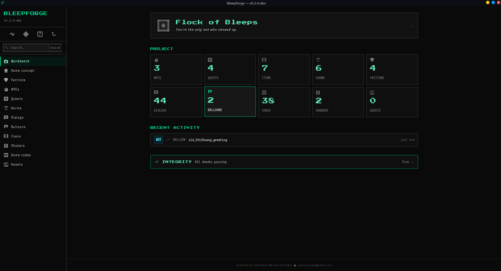
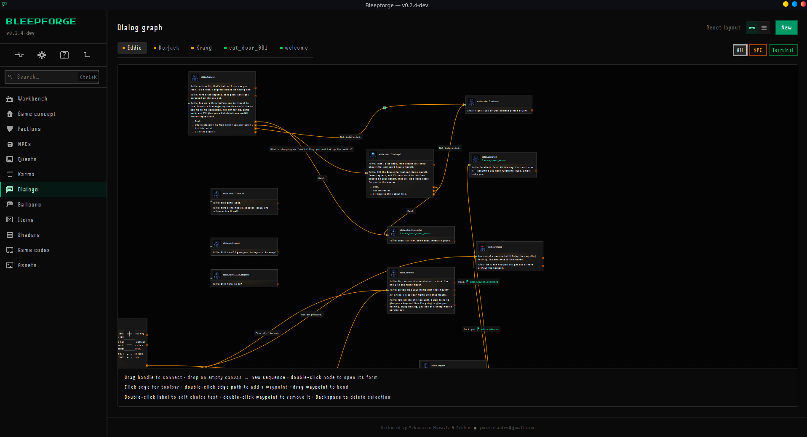
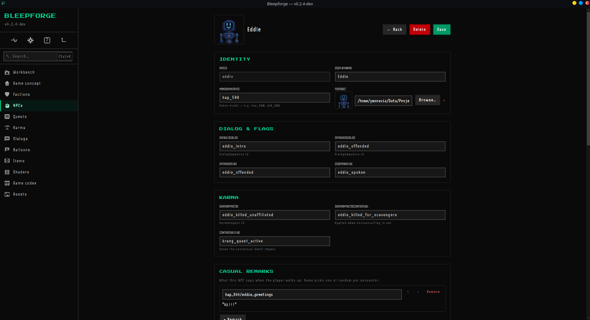
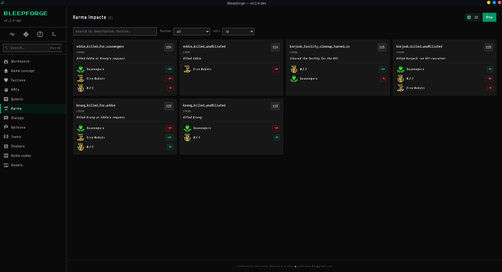
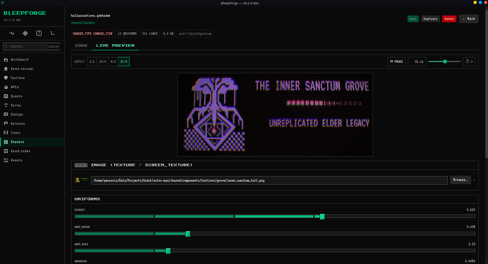
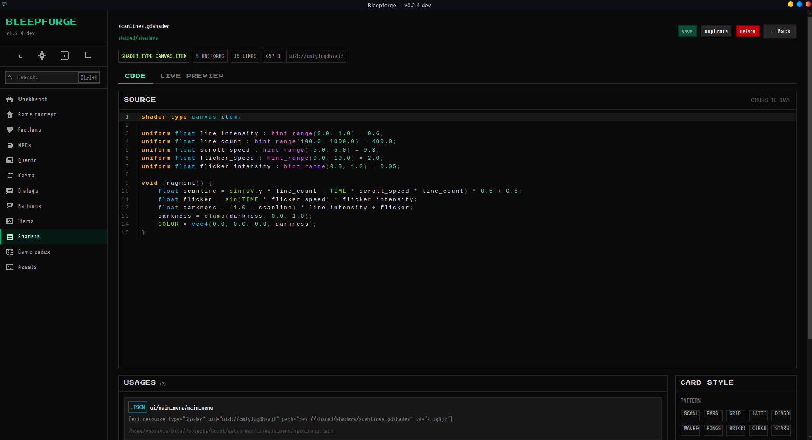
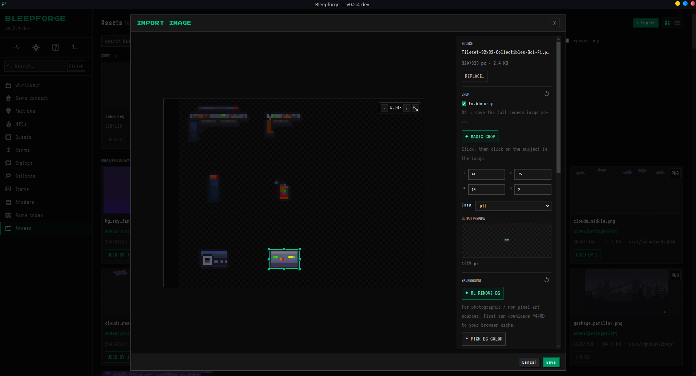
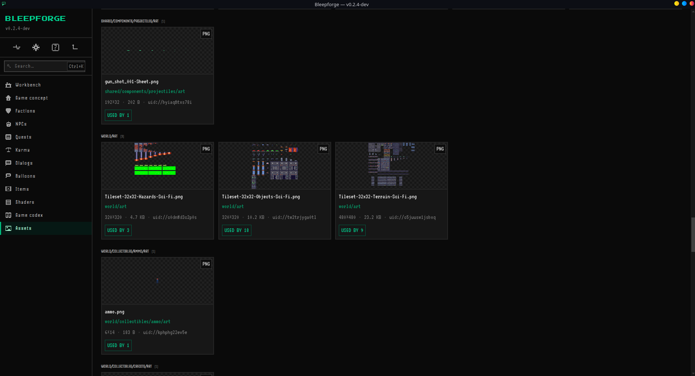
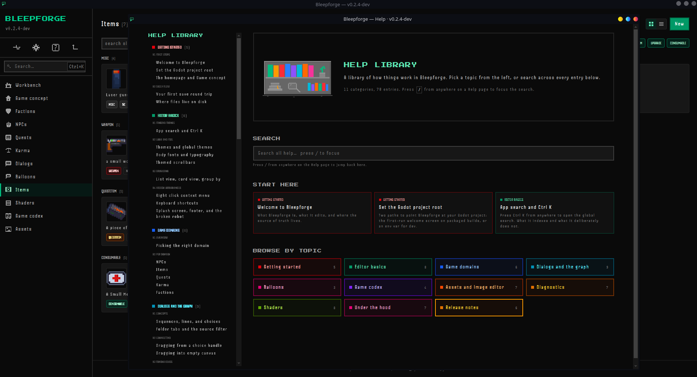

BLEEPFORGE
Schema-driven content authoring studio for Godot 4 / .NET projects.
Get it
Both binaries are unsigned. Windows shows one SmartScreen warning on first install (click More info → Run anyway); Linux just runs after chmod +x. The AppImage works on any modern glibc-based Linux distro — Fedora / Ubuntu / Debian / Arch / Mint / openSUSE / etc. — not just where it was built. macOS build pending. See the releases page for older versions and changelogs.
What's inside
- Twelve authoring surfaces — dialogues (graph + list views), quests, items, NPCs, factions, karma impacts, balloons, project concept, codex, assets gallery + image editor, shaders, in-app help.
- Two-way .tres sync — atomic writes, live chokidar watcher, boot-time reconcile. No "click reimport" step.
- Live WebGL2 shader preview — re-translates GDShader → GLSL ES on every keystroke, auto-generated uniform controls, ping-pong framebuffers for trails & iterative effects.
- Assets gallery + image editor — crop, tint, ML + heuristic background removal, "Magic crop" subject detection, cross-system reference scanning.
- Eight color themes + tunable fonts bundled into named "global themes," with same-origin cross-window sync across popouts.
- App-wide Ctrl+K search across every authored entity by id and display name. Plus a six-tab Diagnostics page covering integrity / reconcile / logs / save activity / process / watcher.
Screenshots
Real screenshots of Bleepforge editing Flock of Bleeps. Click any tile to open the full-size image.

Workbench
The overview. Project header, per-domain counts, recent saves activity, integrity status — all at a glance.

Dialog graph
Branching dialogue as a graph. Drag nodes, draw edges between choices, per-folder layout persists. Per-source-type mood styling (Terminal scanlines, NPC warm overlay).

NPC edit
Full NPC authoring — identity, dialog refs, loot tables, casual remarks, karma impacts. One form, everything connected.

Karma impacts
Per-faction karma deltas with badges and faction icons. Same cards / list / group-by pattern across NPCs, Quests, Items, Balloons, and more.

Live shader preview
Live WebGL2 preview re-translating GDShader → GLSL ES on every keystroke. Auto-generated uniform controls, multi-texture support, ping-pong framebuffers for trails.

Shader source
CodeMirror with GDShader syntax highlighting and gutter diagnostics. Cross-system "used by" panel shows every scene + resource that references the shader.

Image editor
In-app editor — crop, ML background removal, heuristic "Magic crop" subject detection, tint, flip. Writes PNG straight back to your Godot project.

Assets gallery
Every image in the project with "used by N" reverse-lookup pills. Click any image to see exactly which scenes + resources reference it.

Help library
Bleepforge documents itself. 11 categories, 78 entries, in-page search, persistent sidebar. Read about how the editor works without leaving the editor.
What's new
A note on scope
Bleepforge is currently shaped around Flock of Bleeps, an in-development 2D adventure-platformer about a not-very-bright robot judged worthless and dumped in a landfill. The seven game-domain schemas are hardcoded to that project today; generic-for-any-Godot-project is the long-term direction.
You need a Godot 4 .NET (C#) project to point at — the standard non-.NET Godot won't open Bleepforge's target. See the README for the architecture sketch and the project bible for the design rationale behind everything.